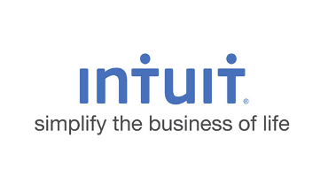

Work Across the USA
-

- 
-

-

Co-ops/Internships

On Paper
In My Free Time


Beyond An Engineer


Lights, Camera, Action!
Who Am I?
I am Amar Bhatt, a Computer Engineer, Roboticist, and Developer. I recieved my BS and MS in Computer Engineering with a minor in Economics at Rochester Institute of Technology (RIT). My thesis topic revolved around Deep Apprenticeship Learning and expansion of Deep Reinforcement Learning. The connection between hardware and software has always prodded at my curiosity. When I began to learn more about robotics I was hooked, and becoming a Computer Engineer was made for me. My goal is to be working on the front lines of research and development for robotic surgical systems. It is my belief that robotic surgery is the next step in medical advancement, and that it can completely revolutionize the healthcare industry. I have a strong base in both hardware and software, and I am always looking to get involved with new projects and opportunities. Feel free to reach out to me!
Let's Talk
Questions? Comments? Concerns? Let me know! Have a cool project you need help with? Shoot me an email and lets make it happen.